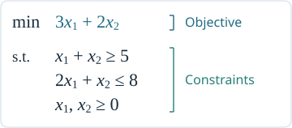
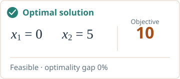

Inventory assumptions
Technical backup · 01


Rewards, costs, and bounds
Technical backup · 02
Occupation flows and policy recovery
Technical backup · 03
Marginal flows and missing coordination
Technical backup · 04
Link component flows to network flows
Technical backup · 05
Pricing and stopping
Technical backup · 06
From a violation search to a density
Technical backup · 07
PSMD: assumptions and interpretation
Technical backup · 08
Guidance changes state relevance
Technical backup · 09
Representation and policy guarantees
Technical backup · 10
Further reading and reproducibility
Technical backup · 11
Adapt and self-adaptive
The common elements of sequential problems
Sequential decision models
Bellman’s equation and the policy objective
Existing methods for solving MDPs
Motivation for this tutorial
How can we better formulate and represent sequential decision problems?
Turning an MDP model into a useful policy requires choices about representation and solution methods.
Our inspiration: mathematical optimization



Obtain and evaluate a solution; add cuts or revise the model.Bringing this workflow to MDPs
Aim: make it easier to model sequential problems and leverage optimization tools to obtain better policies.
Construct, optimize, refine
COR framework
Construct: start with displays we know or use
Begin with existing plans, familiar combinations, domain knowledge, or a simple heuristic.


Build a flow model to decide how to use these displays under uncertainty.
The display problem as an MDP
Why is the Bellman equation difficult to solve?
The state combines all products’ demand information, and actions must satisfy the shared budget.
20 products · 3 local states each
20 binary feature decisions
A cooler and tent may each look attractive, but together need 9 space units out of 8.
Constraint violation learning
Continuous decisions
Linear programming model
Two key bottlenecks
Approximate linear program
Constraint violation function
Inventory control example
Constraint violation function: illustration
Regularized saddle point problem
The optimal density is Gibbs
Primal-dual updates in PSMD algorithm
PSMD upper and lower bound illustration